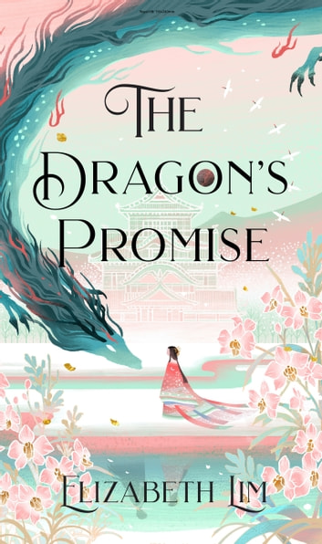

🔙 Back to All Books
- 
-
The Dragon's Promise
Elizabeth Lim
Book Description
In this sequel to New York Times bestselling, Six Crimson Cranes Shiori must journey to the kingdom of dragons, return a cursed pearl with the power to destroy the world, and fight to hold on to all that is dear to her. Fans of Shadow and Bone will devour this soaring fantasy from the acclaimed author of Spin the Dawn.
Princess Shiori made a deathbed promise to return the dragon’s pearl to its rightful owner, but keeping that promise is more dangerous than she ever imagined. She must journey to the kingdom of dragons, navigate political intrigue among humans and dragons alike, fend off thieves who covet the pearl for themselves and will go to any lengths to get it, all while cultivating the appearance of a perfect princess to dissuade those who would see her burned at the stake for the magic that runs in her blood.
The pearl itself is no ordinary cargo; it thrums with malevolent power, jumping to Shiori’s aid one minute, and betraying her the next—threatening to shatter her family and sever the thread of fate that binds her to her true love, Takkan. It will take every ounce of strength Shiori can muster to defend the life and the love she’s fought so hard to win.
Genres
Fantasy | Young Adult | Romance | Dragons | Fiction | Mythology
About the Author
Elizabeth Lim grew up on a hearty staple of fairy tales, myths, and songs. Her passion for storytelling began around age 10, when she started writing fanfics for Sailor Moon, Sweet Valley, and Star Wars, and posted them online to discover, "Wow, people actually read my stuff. And that's kinda cool!" But after one of her teachers told her she had "too much voice" in her essays, Elizabeth took a break from creative writing to focus on not flunking English...